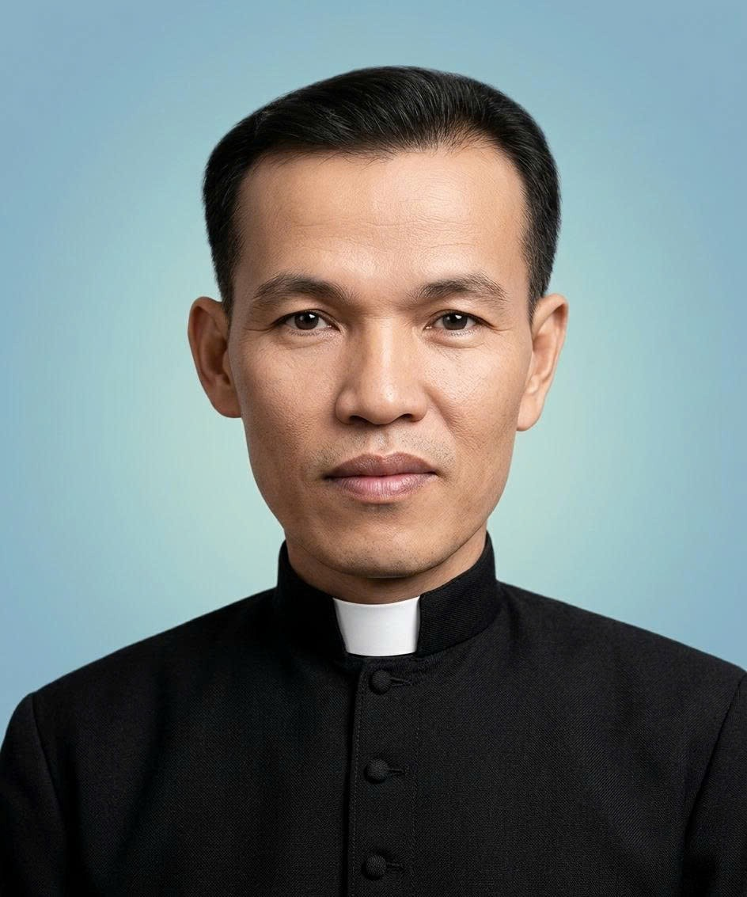
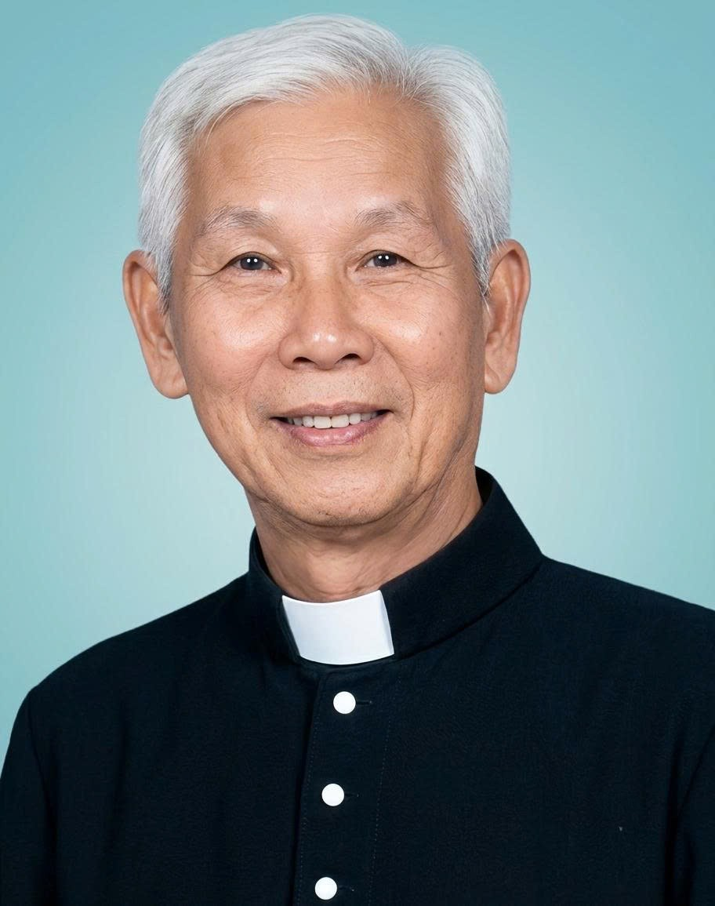
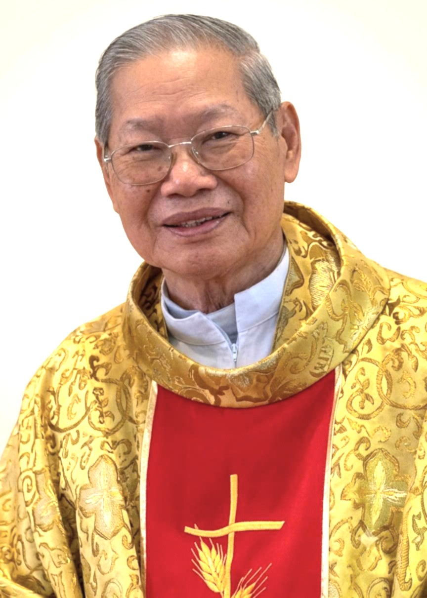
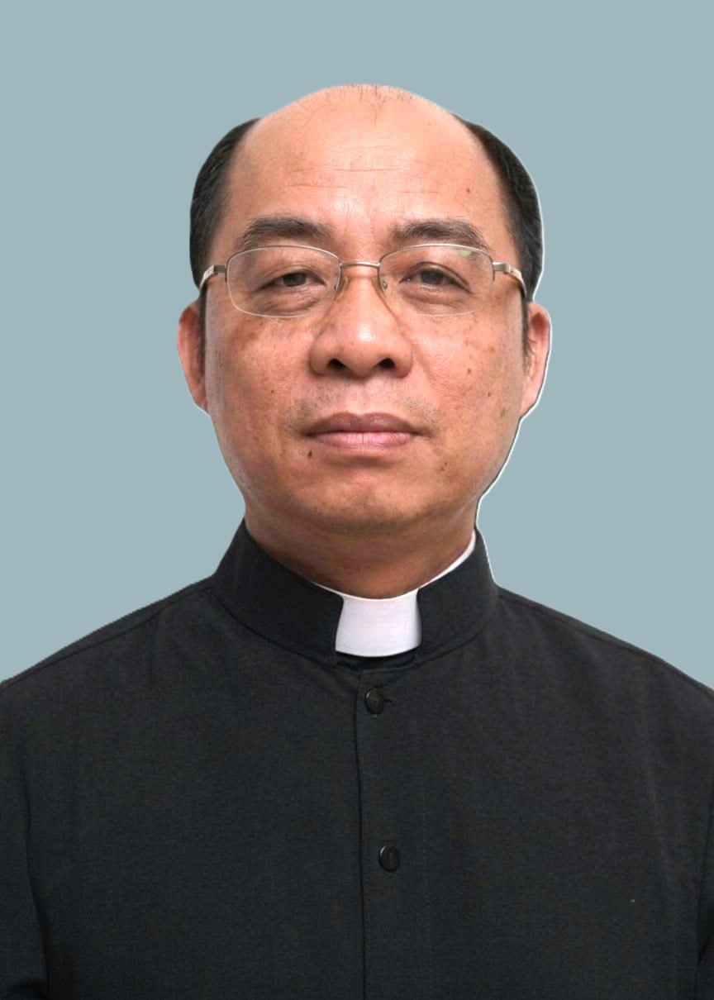
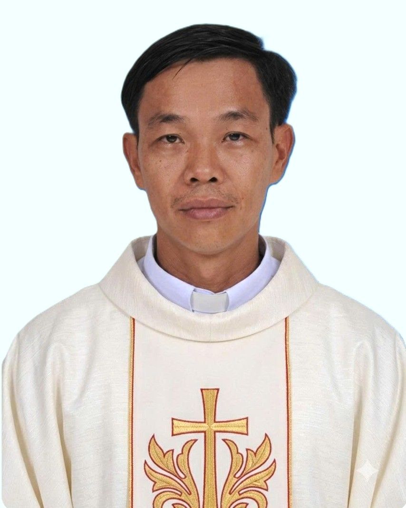
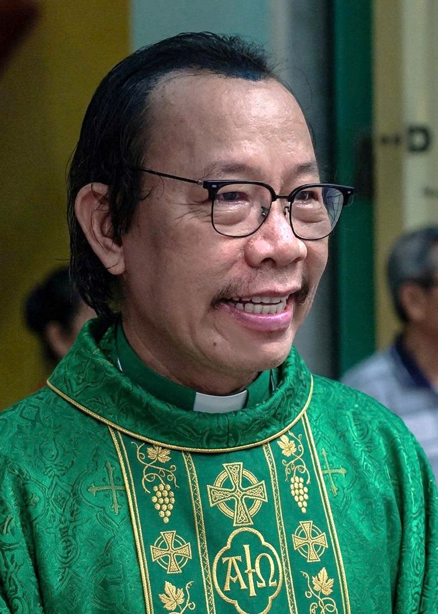

Giáo Xứ Hiển Linh
Số 5GH Ngô Tất Tố, Phường 22, Quận Bình Thạnh, Tp.HCM
Quá Trình Hình Thành Và Phát Triển
Năm 1964: Cha Luca Phạm Anh Dụ khởi công xây dựng Nhà Thờ trên thửa ruộng 800m² bằng vật liệu nhẹ, tường gạch, mái tole. Nơi đây thuộc Giáo khu 9 Giáo xứ Thị Nghè. Hằng ngày cộng đoàn giáo dân đến cầu nguyện; Chúa nhật mới có Linh mục đến dâng Thánh Lễ.
Năm 1965: Cha Luca Phạm Anh Dụ được bổ nhiệm làm Cha quản nhiệm xứ tiên khởi.
Năm 1968: Đức Cha Phanxicô Xaviê Trần Thanh Khâm đến ban phép thành lập giáo xứ, lấy tên là Giáo xứ Hiển Linh. Giáo dân nơi đây tách rời khỏi Giáo xứ Thị Nghè.
Năm 1975: Cha Luca Phạm Anh Dụ đi xa, Tòa Tổng Giám Mục bổ nhiệm Cha Phêrô Vũ Văn Huỳnh kế nhiệm.
Ngày 4/12/1988: Khởi công xây dựng tháp chuông.
Năm 1993: Tòa Tổng Giám Mục bổ nhiệm Cha Gioan Nguyễn Văn Minh làm Cha Chánh xứ.
Ngày 6/1/1995: Đức Cha Gioan Baotixita Bùi Tuần long trọng cắt băng khánh thành Nhà Thờ mới trong ngày mừng Bổn Mạng giáo xứ — Lễ Chúa Hiển Linh.
Ngày 16/4/2006: Đức Hồng Y Gioan Baotixita Phạm Minh Mẫn công nhận Giáo xứ Hiển Linh là một Giáo xứ thuộc Giáo phận từ ngày 23/6/1969.
Ngày 24/7/2013: Cha Giuse Phạm Sỹ Tùng được Tòa Tổng Giám Mục bổ nhiệm làm Cha Chánh xứ.
Ngày 27/11/2021: Cha Giuse Nguyễn Quốc Vương được bổ nhiệm làm Cha Chánh xứ cho đến nay.
Các Linh Mục Đã Phục Vụ Giáo Xứ
Danh Sách Linh Mục

Sinh ngày 24 tháng 11 năm 1927
Phục vụ giáo xứ từ năm 1964 đến năm 1975
Năm 1975 xuất ngoại sang Hoa Kỳ
An nghỉ trong Chúa lúc 19g53 ngày 13/11/1999 tại Hoa Kỳ — Hưởng thọ 72 tuổi

Sinh ngày 23 tháng 4 năm 1923
Phục vụ giáo xứ từ năm 1975 đến ngày 30/5/1992
Mừng Kim Khánh Linh mục ngày 1/5/2000 tại Giáo xứ Hiển Linh
An nghỉ trong Chúa ngày 20/5/2001 tại Giáo xứ Bạch Lâm — Hưởng thọ 78 tuổi

Sinh ngày 2 tháng 1 năm 1932
Phục vụ giáo xứ từ năm 1993 đến ngày 31/7/2013
Mừng Kim Khánh Linh mục ngày 23/4/2012

Sinh ngày 07 tháng 12 năm 1969
Phục vụ Giáo xứ Hiển Linh từ năm 2013 đến năm 2021

Chánh xứ Giáo xứ Hiển Linh từ ngày 27/11/2021
Ngày 05/08/2025 nhận bổ nhiệm thư đến Giáo xứ Công Lý, Hạt Tân Định — TGP Sài Gòn ↗
Ngày 15/08/2025 — Lễ Đức Mẹ Lên Trời — dâng Thánh Lễ Tạ Ơn trong vai trò Tân Quản xứ Giáo xứ Công Lý — Facebook ↗
Ngày 22/08/2025 — Lễ Đức Trinh Nữ Vương — dâng Thánh Lễ Tạ Ơn kết thúc sứ vụ tại Giáo xứ Hiển Linh sau 3 năm 9 tháng — Facebook ↗

Quản nhiệm Giáo xứ Hiển Linh từ ngày 29/08/2025
Ngày 29/08/2025 dâng Thánh Lễ Tạ Ơn mở đầu sứ vụ Quản nhiệm Giáo xứ Hiển Linh
Danh Sách Ban Thường Vụ Qua Các Nhiệm Kỳ
Năm 1968| Họ Tên | Chức Vụ |
|---|---|
| Ông Giuse Phan Văn Tiên | Chủ Tịch |
| Ông Giuse Nguyễn Văn Miêng | Phó Chủ Tịch |
| Ông Phaolô Nguyễn Khắc Hãng | Thư Ký |
※ Các nhiệm kỳ tiếp theo đang được bổ sung thêm.
Giáo Khu I — Thánh Bổn Mạng: Thánh Cả Giuse
Ngày mừng Lễ Bổn Mạng: 19 tháng 3 hằng năm. Giáo khu được thành lập từ năm 1968. Giáo dân tính đến năm 2019: 119 hộ gia đình.
Giáo khu có nhiệm vụ quan tâm đến cộng đoàn dân Chúa, đặc biệt những người khô khan, nguội lạnh; thăm hỏi giúp đỡ họ ăn năn trở về cùng Chúa. Lo các nghi thức tang lễ, thăm kẻ liệt, phục vụ các nghi thức tôn giáo.
Ban Chấp Hành Qua Các Thời Kỳ
1968 – 1978| Họ Tên | Chức Vụ |
|---|---|
| Ông Phanxicô Trần Văn Ngọc | Trưởng khu |
| Ông Giuse Nguyễn Văn Thân | Phó khu |
| Họ Tên | Chức Vụ |
|---|---|
| Ông Đaminh Đinh Văn Lâm | Trưởng khu |
| Ông Giuse Nguyễn Văn Thư | Phó khu |
| Họ Tên | Chức Vụ |
|---|---|
| Ông Philipphê Hoàng Văn Phú | Trưởng khu |
| Ông Giuse Lê Văn Lai | Phó khu |
| Ông Giuse Nguyễn Văn Cận | Thư ký |
| Họ Tên | Chức Vụ |
|---|---|
| Ông Đaminh Đinh Hoàng Thuần | Trưởng khu |
| Ông Đaminh Nguyễn Trung Đăng | Phó 1 |
| Ông Gioan Baotixita Lê Thanh Tâm | Phó 2 |
| Bà Anê Hoàng Thị Linh Thương | Thư ký |
Giáo Khu II — Thánh Bổn Mạng: Thánh Phêrô và Phaolô
Ngày mừng Lễ Bổn Mạng: 29 tháng 6 hằng năm. Năm 1968, Cha Sở Luca Phạm Anh Dụ cùng Hội Đồng Mục Vụ thiết lập ranh giới các giáo khu. Khu 2 được nhận hai Thánh Phêrô – Phaolô làm Quan Thầy.
Ban Chấp Hành Qua Các Nhiệm Kỳ
1968 – 1972| Họ Tên | Chức Vụ |
|---|---|
| Ông Giuse Đoàn Quang Liêm | Trưởng khu |
| Ông Phêrô Hồ Xuân Thế | Phó khu |
| Họ Tên | Chức Vụ |
|---|---|
| Ông Phêrô Hồ Xuân Thế | Trưởng khu |
| Ông Martinô Nguyễn Trường Giang | Phó khu |
| Họ Tên | Chức Vụ |
|---|---|
| Ông Giuse Nguyễn Duy Bi | Trưởng khu |
| Ông Antôn Đỗ Cao Trinh | Phó khu |
| Họ Tên | Chức Vụ |
|---|---|
| Ông Giacôbê Thái Quang Hiển | Trưởng khu |
| Ông Don Boscô Nguyễn Quốc Tiến | Phó khu 1 |
| Ông Phaolô Huỳnh Quốc Nam | Phó khu 2 |
| Bà Maria Trần Thị Hồng | Thư ký |
| Bà Maria Phạm Thị Thu | Thủ quỹ |
Giáo Khu III — Thánh Bổn Mạng: Thánh Gioan Baotixita
Ngày mừng Lễ Bổn Mạng: 24 tháng 6 hằng năm. Thành lập từ năm 1968, bao gồm trọn vẹn Cư xá Cửu Long, tiếp giáp với Giáo khu I và Giáo khu IV.
Ban Chấp Hành Qua Các Thời Kỳ
1968 – 1984| Họ Tên | Chức Vụ |
|---|---|
| Ông Đaminh Nguyễn Đức Dịch (mất 2010) | Trưởng khu |
| Họ Tên | Chức Vụ |
|---|---|
| Ông Giuse Đỗ Quang Hoàng | Trưởng khu |
| Ông Phêrô Huỳnh Hữu Chương | Phó khu 1 |
| Ông Luca Trần Kim Tấn Liêm | Phó khu 2 |
| Ông Đaminh Vũ Đức Tiến | Thủ quỹ |
| Họ Tên | Chức Vụ |
|---|---|
| Ông Giuse Trần Xuân Cải | Trưởng khu |
| Ông Giuse Nguyễn Trung Thịnh | Phó khu 1 |
| Ông Đaminh Nguyễn Văn Phú | Phó khu 2 |
| Bà Têrêsa Nguyễn Thị Tuyết Lan | Thủ quỹ |
Giáo Khu IV — Thánh Bổn Mạng: Thánh Phanxicô Xaviê
Ngày mừng Lễ Bổn Mạng: 3 tháng 12 hằng năm. Thánh Phanxicô Xaviê là vị Thánh truyền giáo, nên giáo khu IV luôn noi theo gương Thánh Bổn Mạng trong tinh thần truyền giáo.
Ban Hành Giáo Qua Các Thời Kỳ
1977| Họ Tên | Chức Vụ |
|---|---|
| Ông Phêrô Ngô Đình Bá | Trưởng khu |
| Ông Gioan Baotixita Nguyễn Hữu Nam | Phó khu |
| Họ Tên | Chức Vụ |
|---|---|
| Ông Vincentê Phan Anh Dũng | Trưởng khu |
| Ông Phêrô Ngô Đình Hùng | Phó khu 1 |
| Ông Phaolô Nguyễn Trí Thức | Phó khu 2 |
| Bà Maria Lưu Thị Thanh | Thư ký |
| Bà Maria Nguyễn Thị Thu Thảo | Thủ quỹ |
Dòng Tu Đaminh — Tu Xá Têrêsa
Năm 1991, Dòng nữ Đaminh Bà Rịa Vũng Tàu được thành lập tọa lạc trên địa bàn giáo khu Giuse. Dòng mừng kính Bổn Mạng Thánh Têrêsa Hài Đồng Giêsu vào ngày 1/10 hằng năm. Cộng đoàn hiện diện tại Giáo xứ Hiển Linh gần 30 năm, phục vụ việc dạy giáo lý và các hoạt động mục vụ.
Hội Gia Đình Phạt Tạ Thánh Tâm
Thành lập từ năm 1978, gồm khoảng 30 hội viên. Hội sinh hoạt đều vào thứ sáu hằng tuần — làm Giờ Thánh tôn vinh Thiên Chúa. Họp định kỳ thứ sáu đầu tháng có Cha linh hướng tham gia.
Ban Chấp Hành: Ông Giuse Nguyễn Duy Bi (Trưởng) · Ông Giuse Vũ Đình Trung (Phó) · Bà Maria Nguyễn Thị Khấn (Thủ quỹ)
Hội Hiền Mẫu — Theo Chân Mẹ Sầu Bi
Thành lập năm 1980 với tên "Hội Bảy Sự". Khôi phục lại tháng 9/2014 dưới sự hướng dẫn của Lm. Giuse Phạm Sỹ Tùng. Ngày Lễ Tuyên khấn: 15/9/2014 — Lễ Đức Mẹ Sầu Bi.
Ban Chấp Hành: Bà Maria Trần Thị Hồng (Hội trưởng) · Bà Maria Vũ Thị Bạch Yến (Phó nội) · Bà Maria Phạm Thị Mỹ Tiên (Phó ngoại) · Bà Anna Nguyễn Thị Xuân (Thư ký) · Bà Maria Đinh Thị Tố Quỳnh (Thủ quỹ)
Huynh Đoàn Giáo Dân Đaminh
Thành lập năm 1982 dưới thời Cha Phêrô Vũ Văn Huỳnh, ban đầu mang tên Dòng Ba Đaminh. Nhiệm vụ chính: nguyện các Giờ Kinh Phụng Vụ, cầu nguyện theo ý Đức Giáo Hoàng, thăm viếng bệnh nhân và người già yếu.
Ban Phục Vụ hiện tại (Nhiệm kỳ 11): Bà Anna Lương Thị Hoàn (Đoàn Trưởng) · Bà Maria Vũ Thị Tuyết Trinh (Đoàn Phó) · Ông Phêrô Nguyễn Đức Hiệu (Thư Ký) · Bà Maria Nguyễn Thị Khấn (Thủ Quỹ)
Legio Mariae — Cùng Mẹ Ra Khơi
Thành lập ngày 4/10/2006, chọn Thánh hiệu Nữ Vương Rất Thánh Mân Côi làm Bổn Mạng. Linh đạo: "Đến với Chúa Giêsu qua Mẹ Maria." Hội viên thực hiện công tác tông đồ: thăm viếng bệnh nhân, gia đình gặp khó khăn, người nghèo neo đơn.
Thành lập ban đầu: Ông Martinô Nguyễn Trường Giang (Hội trưởng) · Bà Anna Têrêsa Nguyễn Thị Thùy Linh (Phó) · Ông Gioan Baotixita Lê Thanh Tâm (Thư ký) · Bà Maria Lưu Thị Thanh (Thủ quỹ)
Ca Đoàn Cecilia
Từ năm 1968, Cha Luca Phạm Anh Dụ quy tụ anh chị em hình thành ban hát phục vụ Thánh Lễ. Ca trưởng đầu tiên: chú Nguyễn Văn Liên. Hiện nay do anh Anphongsô Lê Uy Phong phụ trách hơn 30 năm. Ca đoàn chọn Thánh Cecilia làm Bổn Mạng, mừng kính ngày 22 tháng 11 hằng năm. Khoảng 30 thành viên độ tuổi U40–U70, đầy nhiệt tâm phục vụ.
Ca Đoàn Giới Trẻ — "Yêu Thương và Hợp Nhất"
Thành lập khoảng trung tuần tháng 3/2016, trực thuộc Ban Mục vụ Giới trẻ. Số lượng 20–25 ca viên từ nhiều giáo xứ. Ca trưởng: chị Anna Nguyễn Thị Kim Liên. Phục vụ Thánh Lễ Chúa Nhật chiều, lễ hôn phối, các ngày Lễ trọng và chầu Thánh Thể.
Ca Đoàn Maria Goretti — "Ca Đoàn Rộn Ràng Nhất"
Thành lập tháng 4/2004 theo đề xuất của chị Ca trưởng Maria Lê Đan Tú và sự chấp thuận của Cha Sở Gioan Nguyễn Văn Minh. Nhận Thánh nữ Maria Goretti làm Quan Thầy, mừng Bổn Mạng ngày 6 tháng 7 hằng năm. Năm 2019 mừng 15 năm thành lập.
Ban Điều Hành hiện tại (từ 3/2016): Anh Phêrô Nguyễn Đức Hùng (Đoàn trưởng) · Chị Maria Nguyễn Thị Trang (Ca trưởng) · Chị Maria Đinh Lê Hoàng Anh (Thư ký) · Chị Têrêsa Kỳ Ngọc Huyền (Thủ quỹ)
Ban Phục Vụ Thánh Lễ
Thành lập tháng 6/2008, sau khi các thành viên tham dự khóa đào tạo tại Trung Tâm Mục Vụ TGP Sài Gòn. Bổn Mạng: Lễ Mình Máu Thánh Chúa Kitô. Tinh thần: "Phục vụ là yêu thương — Phục vụ là phục vụ Chúa."
Công việc: giữ trật tự Thánh Lễ, xin tiền, cắm hoa, mua nến, mua bánh lễ, vệ sinh nhà Chúa, giặt áo lễ, hỗ trợ nghi thức rửa tội.
Trưởng Ban đầu tiên: Bà Matta Huỳnh Thị Diệu
Ban Lễ Sinh — "Nhỏ Mà Không Nhỏ"
Thánh Bổn Mạng: Thánh Don Boscô, mừng ngày 31 tháng 1 hằng năm. Hiện có khoảng 30 bạn nhỏ (tuổi 7–18+) sinh hoạt. Lễ sinh được rèn luyện cách đi, đứng, phụng vụ và tham gia các hoạt động bác ái, thăm mái ấm, đi thực tế.
Ban Lòng Chúa Thương Xót
Thành lập tháng 8/2009. Mừng kính Bổn Mạng: Chúa Nhật Thứ Hai Phục Sinh. Hoạt động: cầu nguyện 15g chiều mỗi ngày trong tuần, thăm viếng đám tang, công tác bác ái Mùa Chay và Mùa Vọng.
Ban Chấp Hành: Ông Giuse Nguyễn Văn Hậu (Trưởng) · Bà Maria Lưu Thị Thanh (Phó) · Cô Maria Vũ Thị Tuyết Trinh (Thư ký) · Bà Têrêsa Hoàng Thị Hồng Thúy (Thủ quỹ)
Ban Giới Trẻ
Thành lập khoảng năm 2000 dưới thời Cha Gioan Nguyễn Văn Minh. Hoạt động: đại hội giới trẻ Giáo Hạt Gia Định, tổ chức chuyên đề tâm lý, phong trào bóng đá toàn Giáo Hạt.
Nhiệm kỳ IV (2016–nay): Anh Đaminh Nguyễn Phước Giang (Trưởng)
Ban Trật Tự
Thành lập ngày 12/8/2013, gồm 7 thành viên. Công việc: sắp xếp, quản lý xe và hướng dẫn giáo dân trong các Thánh Lễ.
Ban Caritas — "Việc Không Của Riêng Ai"
Ban Caritas Giáo xứ Hiển Linh hoạt động dưới sự phụ trách của anh Đaminh Đoàn Duy Phương cùng 12 thành viên. Tinh thần hoạt động theo lời Thánh Phaolô: "Đức Mến cao trọng hơn cả."
Các hoạt động: thăm viếng bệnh nhân tại gia và bệnh viện, hỗ trợ học phí và trợ vốn, đến với người chưa nhận biết Chúa, tổ chức tặng quà dịp Tết và các lễ dành cho người khó khăn.
"Không cứ là người có điều kiện vật chất, chỉ cần có lòng Mến và nhiệt tâm là được." — Cha Sở